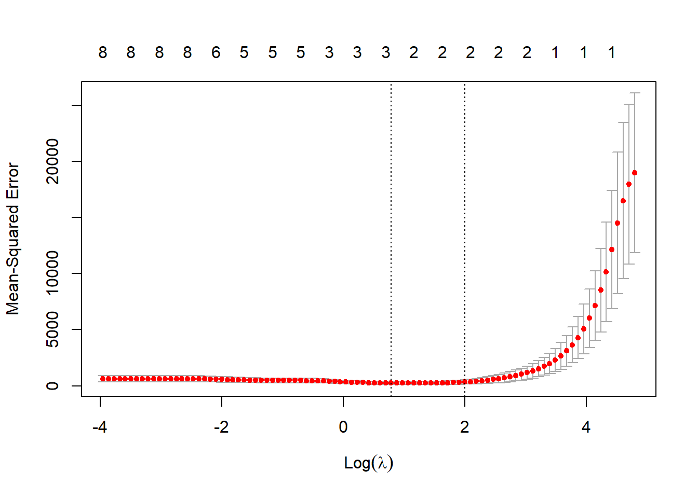

library(AER)
library(corrplot)
library(GGally)
library(glmnet)
library(car)Laboratório 4
Laboratório 4 - Regressão rígida e LASSO
Regressão rígida
Carregando pacotes para dados, gráficos e análise.
Carregando dados e visualizando distribuições e correlações.
data("ManufactCosts")
dados <- data.frame(ManufactCosts)
ggpairs(dados) + theme_bw()Gráfico de correlação com correlações aos pares em um mapa de calor. As positivas tendem para o azul escuro, enquanto as negativas para o vermelho escuro.
r <- cor(dados)
corrplot::corrplot(r,
method = "color",
type = "upper",
order = "hclust",
addCoef.col = "black",
tl.srt = 45, diag = F)
Separando dados de treino, preditores e resposta. O pacote glmnet exige esta última separação.
X <- model.matrix(cost ~ ., dados)[,-1]
y <- dados$cost
tr <- round(0.5*nrow(dados))
set.seed(45)
treino <- sample(1:nrow(dados), tr, replace = F)
X.treino <- X[treino,]
y.treino <- y[treino]Definindo sequência para valores da penalização de encolhimento (lambda).
grid <- 10^seq(10, -2, length = 100)Modelo de regressão rígida para todos valores de penalização de interesse. O comando glmnet faz tanto a regressão rígida quanto a regressão via LASSO. O argumento alpha define qual dos dois tipos de método de regularização é aplicado, com alpha=0 para regressão rígida e alpha=1 para LASSO.
rid1 <- glmnet(X.treino, y.treino, alpha = 0, lambda = grid)Plotando valores dos coeficientes em relação à penalização de encolhimento.
plot(rid1, xvar = "lambda", col = 1:8)
legend("bottomright", lwd = 1, col = 1:8, legend = colnames(X.treino), cex = .7)Função de métricas de desempenho para avaliar o modelo.
metrics <- function(obs, pred) {
RSE <- sum((obs - pred)^2)
SST <- sum((obs - mean(obs))^2)
R2 <- 1 - RSE/SST
MAE <- mean(abs(obs - pred))
RMSE <- sqrt(mean((obs - pred)^2))
return(
data.frame(RMSE = RMSE,
MAE = MAE,
R2 = R2))
}Dados de teste.
X.teste <- X[-treino,]
y.teste <- y[-treino]Desempenho com lambda = 0.02.
rid1.pred <- predict(rid1, s = .02, newx = X.teste)
metrics(rid1.pred, y.teste) RMSE MAE R2
1 42.96158 27.05691 0.9432086Desempenho com lambda = 0 (regressão múltipla).
rid2.pred <- predict(rid1, s = 0, newx = X.teste)
metrics(rid2.pred, y.teste) RMSE MAE R2
1 43.94182 27.54097 0.940749Desempenho com lambda ~ inf (modelo com coefs nulos).
rid3.pred <- predict(rid1, s = 1e10, newx = X.teste)
metrics(rid3.pred, y.teste) RMSE MAE R2
1 158.2486 134.6094 -2.639677e+14Validação cruzada para selecionar lambda.
rid.cv <- cv.glmnet(X.treino, y.treino, alpha = 0)Warning: Option grouped=FALSE enforced in cv.glmnet, since < 3 observations per
foldplot(rid.cv)
bestlam <- rid.cv$lambda.min # selecionando lambda otimo
bestlam[1] 12.0219Desempenho com lambda ótimo.
ridge.pred <- predict(rid.cv, s = bestlam, newx = X.teste)
metrics(ridge.pred, y.teste) RMSE MAE R2
1 24.48286 18.33099 0.9770201Coeficientes (modelo) com lambda ótimo.
out <- glmnet(X,y, alpha =0)
predict(out , type = "coefficients", s = bestlam)9 x 1 sparse Matrix of class "dgCMatrix"
s1
(Intercept) 123.25007
capitalcost -3408.22133
laborcost 1363.79881
energycost -8394.77369
materialscost -386.30713
capitalprice 72.51032
laborprice 117.87583
energyprice 95.02103
materialsprice 201.05565Regressão linear múltipla.
lm1 <- lm(cost~., dados[treino,])
summary(lm1)
Call:
lm(formula = cost ~ ., data = dados[treino, ])
Residuals:
5 11 14 7 19 24 16 22 6 4
1.6507 0.7801 2.3622 -1.0101 -4.7320 -0.7613 4.2340 3.4806 -0.8503 0.3046
12 15
-0.4244 -5.0341
Coefficients:
Estimate Std. Error t value Pr(>|t|)
(Intercept) 93091.37 54831.63 1.698 0.18812
capitalcost -90348.71 53385.29 -1.692 0.18915
laborcost -95904.16 55149.25 -1.739 0.18042
energycost -100115.82 56116.17 -1.784 0.17241
materialscost -92086.45 54751.54 -1.682 0.19118
capitalprice -178.57 82.98 -2.152 0.12048
laborprice 507.30 50.85 9.977 0.00214 **
energyprice 574.19 124.39 4.616 0.01913 *
materialsprice -587.93 161.80 -3.634 0.03590 *
---
Signif. codes: 0 '***' 0.001 '**' 0.01 '*' 0.05 '.' 0.1 ' ' 1
Residual standard error: 5.455 on 3 degrees of freedom
Multiple R-squared: 0.9995, Adjusted R-squared: 0.9982
F-statistic: 744.2 on 8 and 3 DF, p-value: 7.411e-05lm1.pred <- predict(lm1, newdata = dados[-treino,-1])
metrics(lm1.pred, y.teste) RMSE MAE R2
1 57.21022 34.04142 0.9066313Fator de inflação de variância (ideal, menor que 5).
vif(lm1) capitalcost laborcost energycost materialscost capitalprice
19882.52875 210216.61405 7623.81460 271415.93968 81.76512
laborprice energyprice materialsprice
163.35521 49.89049 131.51254 Regressão pelo operador de seleção e contração mínima absoluta ou Least Absolute Shrinkage and Selection Operator - LASSO
Treino do modelo LASSO, alpha = 1 no comando glmnet.
lasso1 <- glmnet(X.treino, y.treino, alpha = 1, lambda = grid)Plotando encolhimento/seleção de coeficientes em função de lambda.
plot(lasso1, xvar = "lambda", col = 1:8)
legend("bottomright", lwd = 1, col = 1:8, legend = colnames(X.treino), cex = .7)
Desempenho com lambda = 0.02.
lasso1.pred <- predict(lasso1, s = .02, newx = X.teste)
metrics(lasso1.pred, y.teste) RMSE MAE R2
1 41.96439 26.6854 0.9454738Desempenho com lambda nulo (regressão linear múltipla).
lasso2.pred <- predict(rid1, s = 0, newx = X.teste)
metrics(lasso2.pred, y.teste) RMSE MAE R2
1 43.94182 27.54097 0.940749Desempenho com lambda ~ inf (coeficientes nulos).
lasso3.pred <- predict(rid1, s = 1e10, newx = X.teste)
metrics(lasso3.pred, y.teste) RMSE MAE R2
1 158.2486 134.6094 -2.639677e+14Validação cruzada para definir lambda.
lasso.cv <- cv.glmnet(X.treino, y.treino, alpha = 1)
plot(lasso.cv)
bestlam <- lasso.cv$lambda.min # lambda otimo
bestlam[1] 2.200895Desempenho do modelo LASSO com lambda ótimo.
lasso.pred <- predict(lasso.cv, s = bestlam, newx = X.teste)
metrics(lasso.pred, y.teste) RMSE MAE R2
1 13.9822 11.88066 0.9921873Coeficientes do modelo LASSO.
out <- glmnet(X,y, alpha = 1)
predict(out , type = "coefficients", s = bestlam)9 x 1 sparse Matrix of class "dgCMatrix"
s1
(Intercept) 179.2195
capitalcost -175.5755
laborcost .
energycost -6210.1544
materialscost .
capitalprice .
laborprice 276.2006
energyprice .
materialsprice .